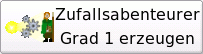
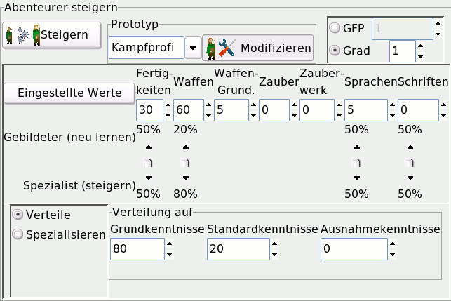
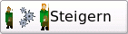
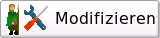

Bedienung - Zufallsgenerator
|
|
|
| Zum Seitenanfang |
Notebookseite Zufallsgenerator
|
| Zum Seitenanfang |
Allgemein
Der Zufallsgenerator ermöglicht es schnell einen regelkonformen Abenteurer (in erster Linie Nichtspielerfiguren)
zu erzeugen. Höherstufige Figuren werden geschaffen indem nach der Generierung einer Grad 1 Figur gesteigert wird.
Die Figuren können sowohl rein zufällig erzeugt werden, als auch durch Vorgaben zuvor skizziert werden.
|
| Zum Seitenanfang |
Abenteurer erzeugen
Zum zufälligen Erzeugen von Abenteurern stehen zwei Buttons zur Verfügung.
|  |
Zufallsabenteurer Grad 1 erzeugen:
Wird dieser Button beätigt, so wird ein erstgradiger Abenteurer erzeugt, der dem Midgardregelwerk entspricht.
|
 |
Vorgaben machen:
Um einen nicht ganz zufälligen Abenteurer zu erzeugen, können mehrere Vorgaben gemacht werden, die bei der Erschaffung der
Figur berücksichtigt werden.
Folgende Vorgaben können gemacht werden:
Spezies:
Legt fest, welcher Spezies die zu generierende Figur angehören soll.
Typ:
Legt den Abenteurertyp der Figur fest
Herkunft:
Das Herkunftsland der Figur wird festgelegt.
angeb. Fert.:
Die angeborenen Fertigkeiten der Figur können vorgegeben werden.
Werte:
Basiseigenschaften und abgeleitete Werte können vorab festgelegt werden.
Die Vorgaben können beliebig miteinander kombiniert werden.
|
|
| Zum Seitenanfang |
Abenteurer steigern

Um höhergradige Zufallsfiguren zu erzeugen, muss ein zuvor erzeugter erstgradiger Abenteurer noch mit dem Zufallsgenerator
gesteigert werden.
|  |
Steigern:
Durch das Betätigen dieses Buttons, wird eine exisiterende Figur durch den Zufallsgenerator gesteigert. Zuvor muss jedoch
festgelegt werden, welcher neue Grad erreicht werden soll, oder wieviele GFP zur Verfügung stehen.
|
 |
Grad/GFP - Vorgabe:
Vor dem Steigern muss festgelegt werden, welcher neue Grad erreicht werden soll, oder wieviele GFP zur Verfügung stehen
sollen.
|
 |
Prototyp:
Es kann noch ein Prototyp festgelegt werden, um das Steigern in eine bestimmte Richtung zu steuern.
Zur Zeit existeren "Kampfprofi" und "Wissenschaftler"
|
|  |
Modifizieren:
Mittels Modifizieren kann die Verteilung der GFP beim steigern beeinflußt werden:
Zunächst kann die Verteilung zwischen den einzelnen Fertigkeitsbereichen festgelegt werden (obere Eingabefelder).
�er die Schieberegler wird das Verhältnis von neu zu lernenden und zu steigernden Fertigkkeiten festgelegt.
Zum Schluß wird noch festgelegt, in welchem Verhältnis Grund-, Standard- und Ausnahmefertigkeiten gelernt werden
sollen.
|
|
| Zum Seitenanfang |
|